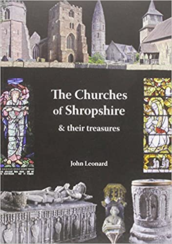
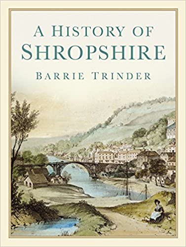
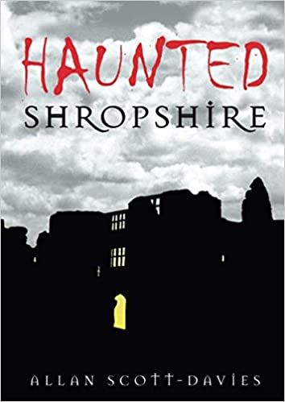
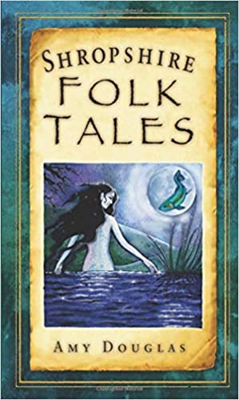
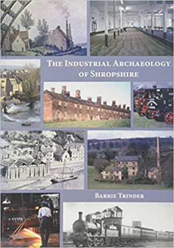
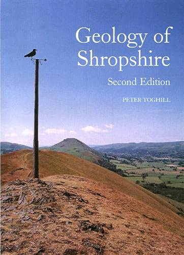

The following books have provided a useful source of reference:
|  |  | |
|  |  |  |
|  |
The following web sites have provided a useful source of reference:
Discovering Shropshire's History
The following Wikipedia pages have provided a useful source of reference: